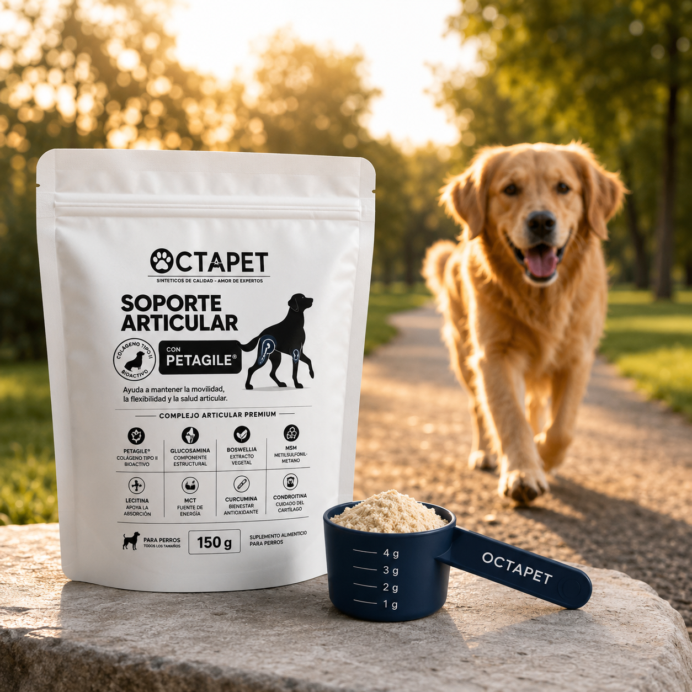
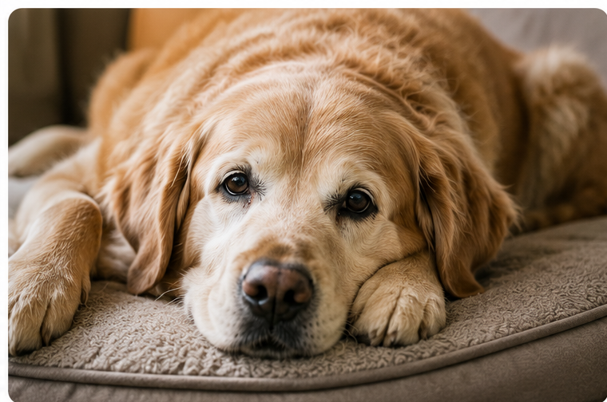
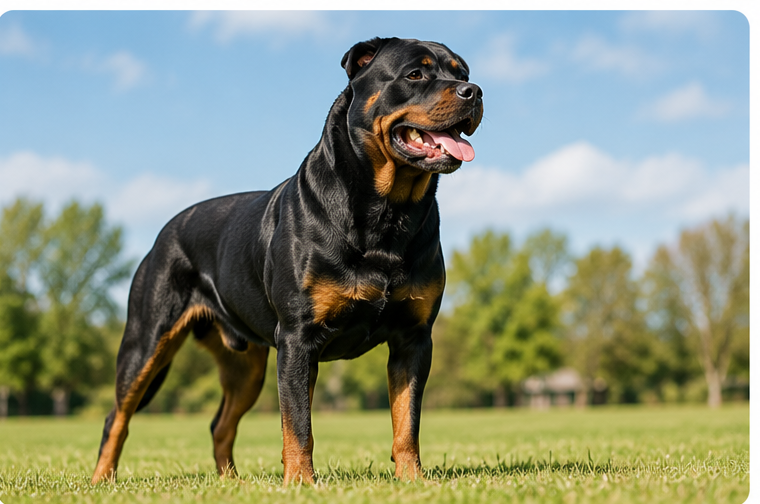
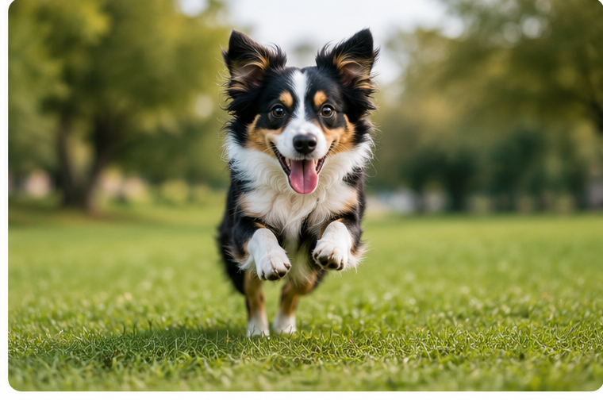
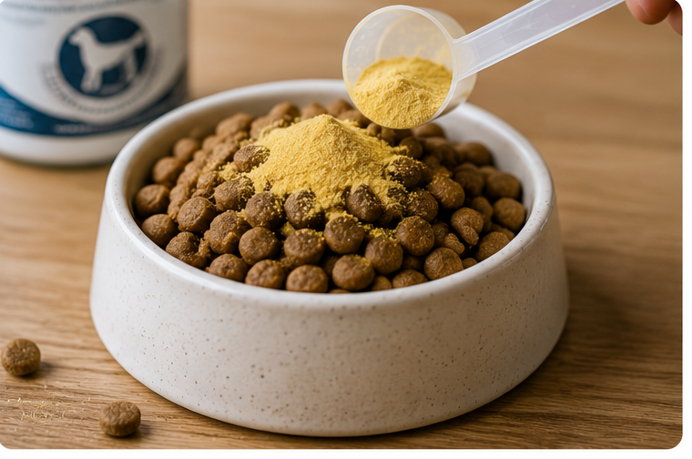

Cartílago sano
Amortigua y ayuda a que el movimiento sea suave.
Una fórmula en polvo pensada para acompañar la movilidad, el confort y el bienestar articular de perros adultos, senior, razas grandes y perros jóvenes muy activos.

No sucede una sola cosa. Se forma un ciclo que puede hacer cada vez más difícil el movimiento.
Amortigua y ayuda a que el movimiento sea suave.
El cartílago pierde grosor y resistencia.
La articulación puede sentirse sensible y rígida.
Caminar, correr o levantarse puede costar más.
El perro evita algunas actividades que antes disfrutaba.
Menos movimiento puede afectar todavía más la fuerza y la movilidad.
Cada grupo fue seleccionado para apoyar una parte distinta del bienestar articular.
Más comodidad para caminar, levantarse y mantenerse activo.
Comodidad al moverse.
Estructura y amortiguación.
Respuesta inflamatoria equilibrada.
Complementa el confort y el soporte de los tejidos conectivos.
Apoyan la estructura y el mantenimiento del cartílago.
Acompañan una respuesta inflamatoria equilibrada.
No actúan directamente sobre la articulación. Ayudan a que la mezcla sea uniforme, práctica y agradable para el perro.
Vehículo de la mezcla
Aceptación y complemento nutricional
Estos ingredientes ayudan a distribuir los componentes de la fórmula de manera más consistente en cada porción.
La articulación necesita más de un tipo de apoyo. Por eso combinamos ingredientes que participan en distintas partes del cuidado articular.
Unos apoyan la estructura del cartílago y los tejidos.
Otros acompañan el confort y la respuesta inflamatoria.
Juntos forman una estrategia más completa para el cuidado diario.
Puede integrarse a la rutina de distintos perros según su edad, tamaño y nivel de actividad.

Para acompañar el bienestar articular conforme pasan los años.

Especialmente útil cuando las articulaciones soportan mayor peso corporal.

Para perros con entrenamiento, trabajo o actividad frecuente.

Una presentación en polvo fácil de mezclar con su alimento habitual.

Las marcas interiores permiten medir incrementos de 1 g sin necesidad de usar una báscula.
Primera línea: 1 g. Segunda: 2 g. Tercera: 3 g. Cuarta: 4 g.
Sirve el polvo al ras, sin compactar ni formar copete.
Las marcas permiten ajustar fácilmente la cantidad diaria.
Usa las líneas interiores como guía y consulta la tabla según el peso de tu perro.
Agrega la porción diaria a su alimento. Para una mejor adaptación, comienza con media porción durante los primeros 5 a 7 días.
Usa la cantidad correspondiente al peso de tu perro.
Puede agregarse una vez al día a comida seca o húmeda.
El cuidado articular funciona mejor cuando forma parte de la rutina.
| Peso del perro | Porción diaria | Marca del scoop | Duración aproximada |
|---|---|---|---|
| Hasta 5 kg | 1 g | 1 línea | 150 días |
| 5 a 10 kg | 2 g | 2 líneas | 75 días |
| 10 a 15 kg | 3 g | 3 líneas | 50 días |
| 15 a 20 kg | 4 g | 4 líneas | 37 días |
| 20 a 30 kg | 5 g | Al ras | 30 días |
| 30 a 40 kg | 6 g | 5 g + 1 línea | 25 días |
| Más de 40 kg | 7 g | 5 g + 2 líneas | 21 días |
Guía orientativa. Puede variar según edad, actividad, condición corporal y recomendación de su médico veterinario.
Coquis corriendo por su pelota, como siempre.
Coquis, nuestra golden de 11 años, sigue corriendo, jugando y disfrutando la vida. Este producto nació pensando en perros como ella: grandes, activos y parte de la familia.
Ingredientes elegidos por la función que cumplen dentro de la fórmula.
Combinaciones pensadas para complementarse.
Una presentación práctica para el uso diario.
Escríbenos para recibir información sobre disponibilidad, resolver dudas o conocer más sobre el soporte articular Octapet.